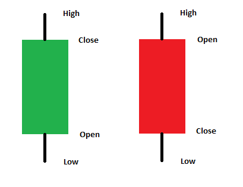
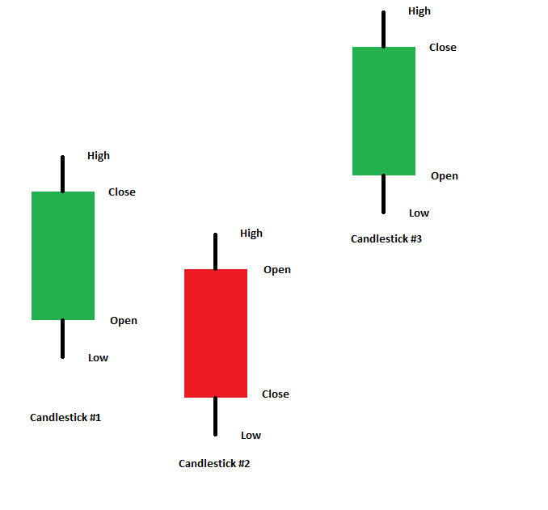
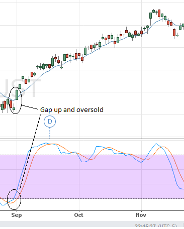
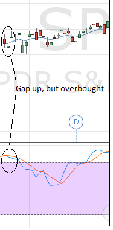
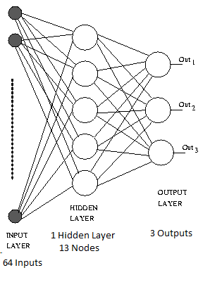

Candlestick Based Trade Entries For Algorithmic Trading Using Neural Networks

Introduction
The stock market provides the opportunity for individual investors to buy into corporations that they believe have value and will increase in value over time. Additionally it provides a means for corporations to generate revenue for their needs. There are many different ways to gauge a corporation's value, so the market provides opportunities for people to buy and sell shares of a corporation's stock according to their beliefs about its value. Some people buy and sell stocks based on economic fundamentals, some base decisions on technical analysis, while others may use sophisticated algorithms for making trades.
The use of computer algorithms to make trading decisions has increased over time. Large banks and other institutions employ algorithms for trading and issuing trade signals from these programs. They take advantage of market movement for generating profits.
Individual investors are also able to participate in the buying and selling of stocks. There are a multitude of providers that allow individuals to buy and sell stocks and employ their investment strategies. Some of these providers enable the use of programmatic buying and selling of stocks. This opens up the playing field of algorithmic trading to anyone interested.
Background
Within technical analysis there are many different ways of looking at stock data to make trading decisions. One of the initial decisions to make is what time frame to look at and what information to display for that specific time frame. Some common time frames include one minute charts, five minute, fifteen minute, hourly, 4 hour, and daily. During the chosen time frame the stock price generally fluctuates. One common way to capture and display this information is with a candlestick. A candlestick, as the name implies, is a figure that resembles a candlestick. The figure consists of a thicker body and a wick at the top and bottom. The thick body contains the open and close price and the wicks show the high and low for that time period. The following figure shows a bullish candlestick and a bearish candlestick. The main difference between the two is where the open and close are in relation to eachother. A bullish candlestick opens lower and closes higher, thus showing upward movement in the market. A bearish candlestick opens higher and closes lower, thus showing downward movement in the market. The figure at the top of the page illustrates bullish and bearish candlesticks.
The Japanese rice traders were the first traders to use candlesticks. They discovered that the candles could capture investor sentiment for a given time period. Certain candlestick patterns gave a good probability that the market would move in a specific direction. These patterns were then used as signals to enter the market, add to positions, or to exit the market. Most candlestick patterns are composed of no more than three candlesticks. Therefore in this project three candlesticks will be used as inputs to the Neural Network.
The stock market uses a number of terms to describe the current direction of stocks. If the market is heading up, it is referred to as a bull market. If it's heading down it's a bear market. If it's moving to the side within a range it's a ranging market or sideways market. When a position is entered to take advantage of a bull market (buy low sell high) a 'long' position is taken. When a position is taken to take advantage of a bear market (sell high buy low) a 'short' position is taken.
The objective of this project is to feed candlestick information into a backpropagation neural network and make trades based on the output.
Problem Description
Artificial Intelligence provides many different tools for solving complex problems. This project is focused applying neural networks to learn, identify, and act upon patterns discovered in the stock market to automate trades. The goal is to have a trading algorithm that will match the historical average return of the stock market through all market conditions.
What This Project Is
This project employs the use of AI algorithms, neural networks specifically, for identifying patterns in the stock market and entering and exiting positions based on the neural network output.
One method of interpreting sentiment and predicting future market action in the stock market is using candlestick patterns. Candlesticks were first used by Japanese rice traders. The theory behind candlesticks is that they capture, in real time, the current sentiment and beliefs of all market participants.
This paper looks at marrying candlestick patterns with neural networks to identify patterns resulting in profitable trades. Coding for this project is done in Python in the Quantopian environment. Quantopian provides a platform for developing trading algorithms, back testing those algorithms, and comparing algorithmic results against market performance.

The screen shot above is taken from a backtest in the Quantopian environment. The figure shows the S&P 500 Index (SPY) in the red line. The blue line reflects the gains and losses of the algorithm being employed. Screen shots like these will be used to compare market returns vs. the returns generated by the trading algorithm.
Why Is This Project Important?
Developing the ability to employ trading algorithms is important for the investor that wants to take control of a portion of their own portfolio. This is especially true if the developed algorithm is able to identify and take advantage of short positions. If one looks back to the stock market crash in 2008-2009, many portfolios lost a significant amount of money during those months. If one had developed an algorithm that was able to identify and take advantage of short opportunities, however, that portfolio could have actually increased in value or at least maintained its value during the crash as opposed to losing a significant portion of its value.
This project is important for this very reason. To allow a portfolio to take advantage of all market conditions and to protect, at least a portion of, one's retirement. If another market crash was to take place, I would prefer to have means in place to protect what has been earned through hard work. In my mind, this is an extremely motivating reason to pursue and find a successful trading algorithm.
Neural Network Input Encoding
One of the design issues with a Neural Network is selecting which inputs will provide the needed information and will help reduce error in training. When looking at the stock prices associated with each candlestick, it's apparent that over time prices can change significantly. Additionally, if the NN is applied to other stocks, the new stock's prices can vary significantly from the initial training set. In order to help reduce the complexity of training and extend the usability of the network, the candlestick inputs are encoded as a binary value. Encoding allows the patterns to be identified, while omitting the complexity of the specific values of the open, high, low and close prices. The encoding consists of comparing each value from one candlestick with each value of another candlestick.
Each comparison is encoded into a binary value where "1" signifies that a price in one candlestick is greater than a price in another candlestick. A "0" signifies that the value in a candlestick one is lower than the value in another candlestick. For example, in the following figure, the 'Open' of candlestick one is compared with the 'Open', 'High', 'Low', and 'Close' of candlestick two. Candlestick one 'Open' is lower than 'Open' and 'High' of Candlestick two, but is higher than 'Low' and 'Close'. This information would be encoded as [0, 0, 1, 1]. A comparison is made between each value in one candlestick to each value in another. As this approach uses three candlesticks, a total of 48 binary inputs are generated for the candlestick portion of the vector feeding the neural network.

Candlestick Attributes
Another important consideration that needed to be taken into account is the height of the candlesticks. A series of candlesticks could potentially have a significant pattern, but if the real body lengths of the candlesticks are very small then the pattern has little significance.


The two figures above show charts with similar gap up patterns, but with different sized candles. The top chart signals a strong upward move, while the bottom chart meanders in a narrow sideways range. Another type of candle that is important to point out is the doji. A doji is a candle with little or no body to the candle with longer wicks to either side of the body. A doji will often indicate market indecision. This is visually apparent as the bulls pushed the market one direction, the bears pushed it back in another and at the end neither side made any headway. These will often show up when both sides are pushing equally aggressively, or when there's not much in the way of market activity. This may happen in days leading up to a big economic release where market participants are sitting on their hands until the report is issued.
To track candle height I created two new classes of binary inputs. One class reports whether or not each of the three candlesticks is a doji (total of three binary values). The value is set to '1' if a doji and a '0' otherwise. The second class creates three groups representing historical lengths seen for the candlesticks. For example, the past 200 candles are looked at and the real body lengths are measured. Those lengths are then divided into three groups (smaller third, middle third, larger third). Each candlestick is then evaluated to see which of the three groups it falls into and these results become part of the binary input vector to the neural network.
Relative Importance of Candlestick Patterns
As mentioned before, not all candlestick patterns have the same significance all the time. One way to help determine if a candlestick reversal pattern is important or not is by looking at how overbought or oversold the market is at the time of the pattern. In the previous figures we see to gap ups, one in an oversold condition and the other in an overbought condition. We can see that the figure in the oversold continues on with a nice move upward, while the one in the overbought condition just continues in a sideways range.
To help identify these conditions three binary values were added to the input vector. The binary values indicate whether the stochastic value is less than 21, greater than 79, or in between. These are measured only for the most recent candlestick.
Another way to add insight to current market conditions for the neural network is to look at the value of the Average Directional Index (ADX). The ADX provides a single value that indicates whether the current market is trending or ranging. If the value is greater than 20 it is considered to be in a trending state, otherwise it is ranging. A binary value was added to the input vector indicating if the current candlestick is trending, '1', or ranging, '0'.
Calculating Training Reward
The final portion of the training input vector is the reward. As this neural net is being trained to identify optimal trade entries I wanted to focus the positive rewards on the best entries. To achieve this when a trio of candlesticks is selected, the algorithm looks forward into the future to ascertain whether the subsequent candles move up or down before triggering a 'close' condition. An exponential moving average (EMA) was used as a trailing stop. When a candlestick closed over the EMA a close condition is issued and the trade is considered over. The bigger the move (positive or negative) the bigger the reward assigned to the training vector. The rewards are bullish, bearish, and neutral. The reward can take on values between +/- 1. Many moves within the market aren't very big, so for every .1 percent the security moves .1 is added to the reward. If the move is greater than 1, then the reward tops out at a 1. If there is not significant reward in either the bearish or bullish directions, then the neutral is given a large positive value.
Neural Network Design
The following figure shows the final neural network design. It consists of 64 binary inputs, 1 hidden layer, 13 hidden layer nodes, and 3 outputs. There isn't a hard rule about the number of nodes and hidden layers in a neural network. It is suggested to have less than two times the size of the input layer. It was decided that this design would use 1/4 of the number of inputs for the hidden layer. It also generates three outputs.

Results
For the initial training and testing of this neural net the time frame from 2007 to 2009 was selected. I wanted to see how well the algorithm did during a variety of market conditions and this time period seemed to capture it all. There's some great bearish territory, some nice ranging, and some bullish movement. The following figure shows the results during this two year stretch. As may be seen from the graph, the algorithm performs very well during the bear market.

While the time period from 2007-2009 provided some awe inspiring results, more temperate markets have a different outcome. Following the crash at the end of 2008 and beginning of 2009, the stock market started a long recovery. The following figure shows the S&P 500 from 2009 to 2011. This time frame shows the first few years of a long bull market. It's not hard to see the upward movement of the SPY and the downward movement of the trading algorithm.

Discussion
From the results section we can see that the algorithm performed the best during the market down turn in 2008 and 2009. During the subsequent years of recovery the gains achieved during the downturn are slowly eaten away. Overall the solution in it's current format is not a viable algorithm for identifying trade entries in all market conditions. It does very well during bearish markets, but sub-optimally the rest of the time.
In digging in to look at the trades being made that chipped away at the account several observations were made. 1. During the bullish trend there were many attempts to short the market. This may have something to do with the fact that during a prolonged upward trend, the stochastic tends to stay in overbought territory. Subsequently, any pattern that looks like a trend reversal pattern will likely trigger a strong sell signal. 2. Also during long bullish trends in and index like the SPY, the upward movement tends to be slow. When a buy entry is signaled it can be quickly closed down due to the method being used to trigger a close on the position.
In future work both of these issues will be looked at in further depth.